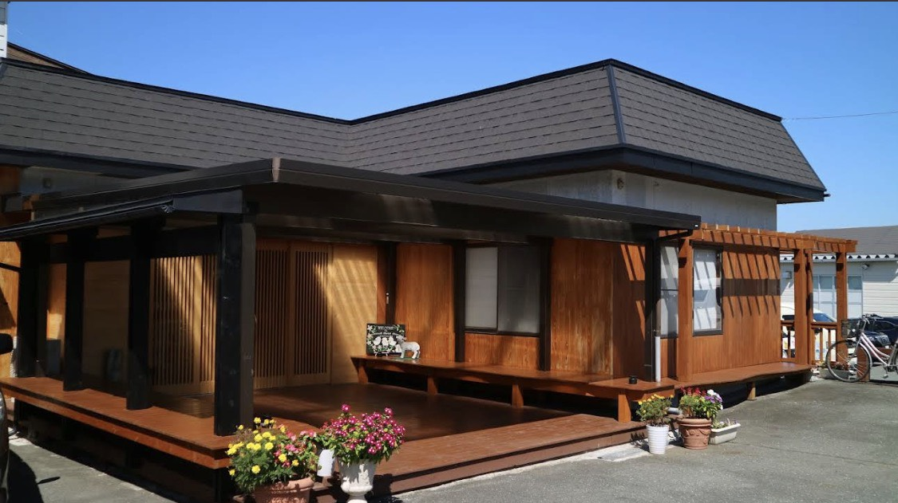
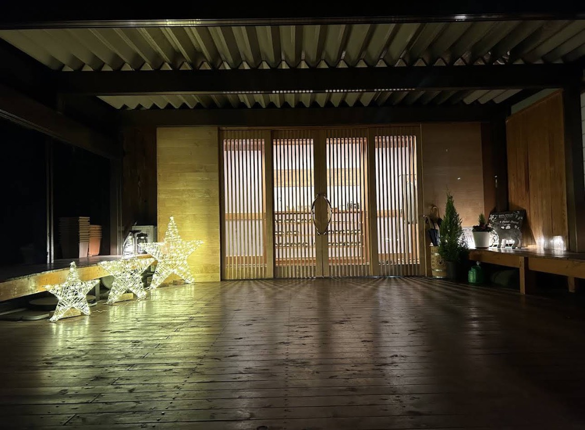

<!DOCTYPE html>
<html lang="ja">
<head>
    <meta charset="UTF-8">
    <meta name="viewport" content="width=device-width, initial-scale=1.0">
    <title>ホーム｜みんなのい～場所</title>
    <link rel="stylesheet" href="style.css">
    <link rel="stylesheet" href="https://cdnjs.cloudflare.com/ajax/libs/font-awesome/6.5.0/css/all.min.css">
</head>

<body>

<!-- ヘッダー -->
<header>
  
</footer>

</body>
</html>  <div class="container">
        <div class="logo">こひつじキリスト教会成沢チャペル</div>
     <br>
        <nav>
            <ul>
                
                <li><a href="index.html">ホーム</a></li>
                <li><a href="first.html">初めての方へ</a></li>
                <li><a href="about.html">教会紹介</a></li>
                <li><a href="service.html">集会・礼拝案内</a></li>
                <li><a href="info.html">お問い合わせ</a></li>
                <li><a href="news.html">お知らせ一覧</a></li>
                <li><a href="access.html">アクセス</a></li>
                <li><a href="market.html">支援活動について</a></li>    
            </ul>
        </nav>
    </div>
</header>

<!-- ファーストビュー -->
<h1><strong>みんなの良い場所</strong></h1>
<section>
<div class="container">
        <div class="card">
        <h1>初めての方も、<br>安心してこられる教会です。</h1>
        <p>どなたでも参加できる礼拝を行なっていますお気軽にお越しください。</p>
    　　<p class="time">毎週日曜日　10：00～礼拝</p>
        </div>
 </div>
</section>
<section>
 <div class="container">
        <div class="card">
     <h2>支援の取り組み</h2>
        <p>私たちの教会では、日々の活動の中で支援の取り組みを行っています。<br>
        <br>
        その一つとして、「ブルースカイマーケット」の商品を通じた支援があります。<br>
        やさしさや思いが込められた品々を、多くの方に知っていただくことを大切にしています。<br>
            <br>
        無理のないかたちで、関心を持っていただければ幸いです。</p>
        </div>
 </div>



    </section>
<!-- フッター -->
<footer>
    <p>© こひつじキリスト教会成沢チャペル・みんなのい～場所</p>  
    <div class="sns">
     <a href="https://www.insutagram.com/kohitsujichurch?igsh=MWo3ZGkzaDhvanh0cg==" target="_blank">
         <i class="fab fa-instagram"</i>
